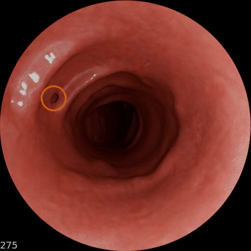
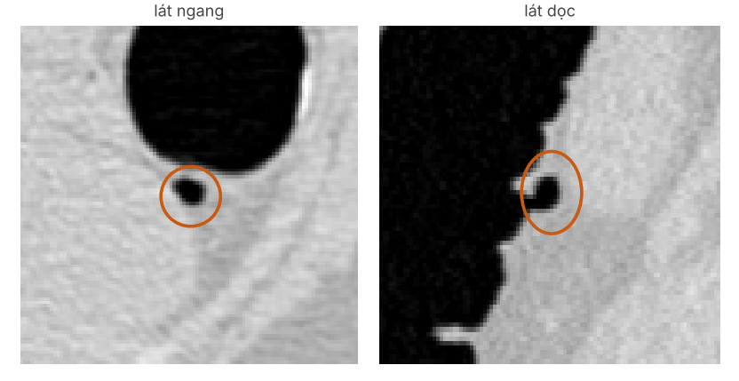
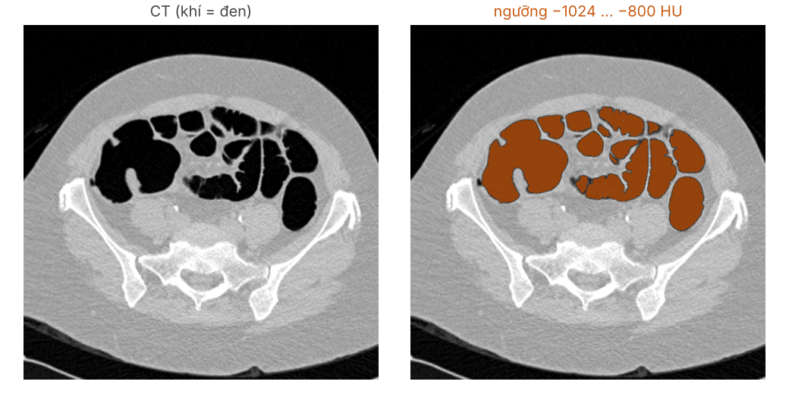
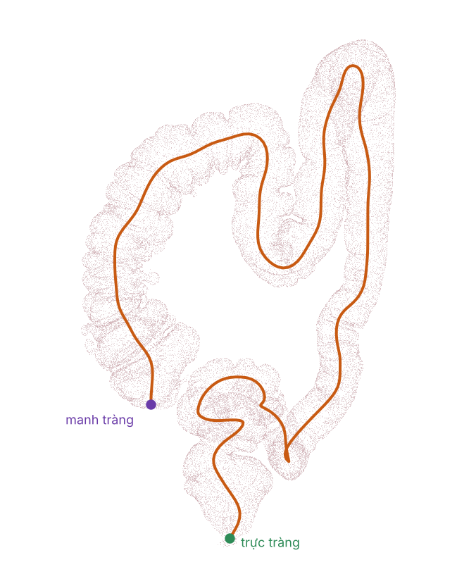
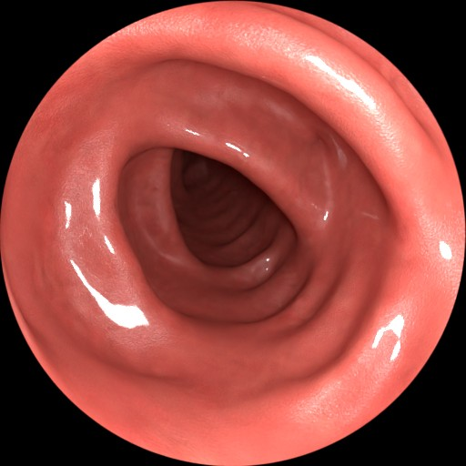
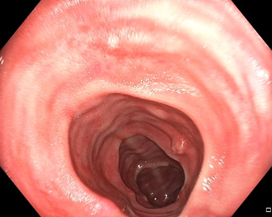
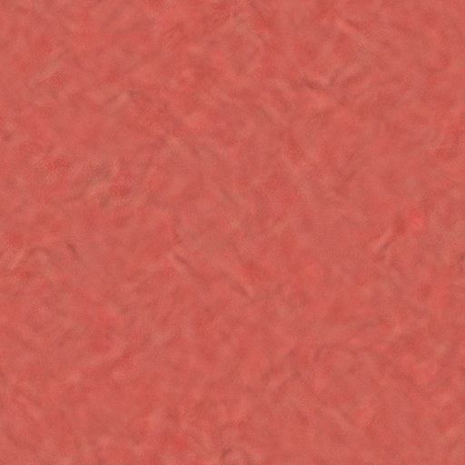
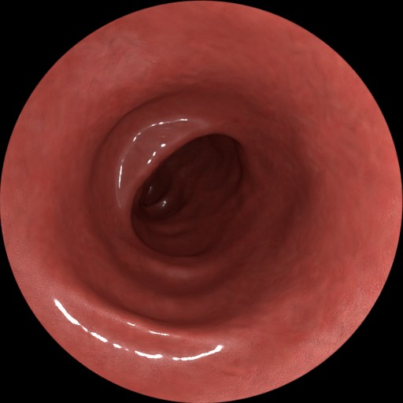

Bộ dữ liệu đứng ở đâu · video nội soi từ CT
Nguyễn Hải Toàn
Kính gửi: TS. Mai Thanh Thái & PGS.TS. Hoàng Văn Xiêm
Phần 1
Nội soi bỏ sót tổn thương. Một phần là vì tổn thương chưa từng lọt vào khung hình — muốn đo được điều đó thì phải có 3D.
26 %, 34 %: Zhao và cs., Gastroenterology 2019;156:1661–74 (43 nghiên cứu, >15.000 ca soi kép) ·
0,177 / 0,075: Freedman và cs., IEEE TMI 2020;39:3451–62 (trên chuỗi tổng hợp có đáp án)
"Chưa lọt vào khung hình": East và cs., Am J Gastroenterol 2007;102:2529–35 · Freedman 2020
| Nhóm | Giải phẫu thật |
3D GT | Ống kính thật |
Tổn thương thật |
Túi thừa |
Trước/sau cắt |
Bác sĩ chấm độ thật |
|---|---|---|---|---|---|---|---|
| Video thậtREAL-Colon, Colon-Bench, EndoMapper | ✓ | ✗ | ✓ | ✓ | ✗ | ✗ | — |
| PhantomC3VD, C3VDv2, C3VD-DEFCOL, EndoSLAM | ✗ | ✓ | ✓ | ✗ | ✗ | ✗ | ✗ |
| Mô phỏng từ CTSimCol3D, RealSynCol, ColonCrafter, VR-Caps, PolypSense3D | ✓ | ✓ | ✗ | ✗ | ✗ | ✗ | ✗ |
| Của mình | ✓ | ✓ | ✓ | ✓ | ✓ | ✓ | ✓ |
✓ cam = đang làm / chờ bác sĩ xác nhận · bảng đầy đủ 14 bộ ở phụ lục
Dựng từ CT ACRIN. Mục tiêu: 103 bệnh nhân có polyp ghi nhận (bộ khác: 3–10 ruột).
Polyp lấy từ chính CT, đúng vị trí ACRIN ghi — không đặt tay. Thêm túi thừa.
Cùng một quỹ đạo camera: polyp còn nguyên, rồi hố sau cắt — đích của máy in.
X-quang xác nhận vị trí; nội soi chấm độ thật và phân loại tổn thương.
Kèm theo: nhãn 3D đầy đủ (depth, pose, độ phủ, kích thước) · ống kính của ống soi lâm sàng đang làm

trong video (khung 275)

trên CT: túi khí ~5 mm lồi ra ngoài thành ruột
Có sẵn trong CT · chưa bộ dữ liệu nào gắn nhãn · chính là vùng mù
Phần 2



Quỹ đạo lý tưởng hoá: đều, luôn ở giữa, chỉ chiều đưa vào — không rung, không dừng, không lùi.

ảnh C3VD (mô hình đại tràng xuống)

cắt miếng, ghép thành tấm liền mạch

phủ lên mesh, mỗi 40 mm lặp lại
| Thành phần | Nguồn | Mức tin cậy |
|---|---|---|
| Hình dạng đại tràng | CT bệnh nhân thật | Thật (~1 mm) |
| Pose camera | Do mình đặt | Chính xác tuyệt đối |
| Đường đi camera | Tính từ mesh | Chính xác, nhưng lý tưởng hoá |
| Ống kính 140° | Gần Olympus của C3VD | Gần đúng, chưa hiệu chuẩn |
| Màu niêm mạc | Ảnh C3VD | Ảnh thật, nhưng của silicon |
| Độ bóng, ánh sáng | Chỉnh bằng mắt | Mô phỏng |
| Dịch, máu, rung, mờ | — | Chưa có |
Đọc CT: xác nhận polyp và túi thừa mà máy tìm ra
Chấm thang điểm từng khía cạnh: lòng ruột, nếp gấp, ánh sáng, niêm mạc, tổn thương
Xem clip, chọn loại polyp, kích thước, hố cắt sạch hay còn sót
Nguyễn Hải Toàn
| Bộ | Giải phẫu thật | Số ruột | Số khung | Ống kính thật | 3D GT | Tổn thương | Tổn thương thật | Túi thừa | Trước/sau cắt | Bác sĩ kiểm |
|---|---|---|---|---|---|---|---|---|---|---|
| REAL-Colon | ✓ | 60 | 2,76 M | ✓ | ✗ | ✓ | ✓ | ✗ | ✗ | ✓ |
| Colon-Bench | ✓ | 60 | 528 đoạn | ✓ | ✗ | ✓ | ✓ | ? | ✗ | ✓ |
| EndoMapper | ✓ | 96 | 24 h | ✓ | ✗ | ✓ | ✓ | ✗ | ✗ | ✓ |
| C3VD | ✗ | 1 | 10 k | ✓ | ✓ | ? | — | ✗ | ✗ | ✗ |
| C3VDv2 | ✗ | 2 | 169 k | ✓ | ✓ | ✓ | ✗ | ✗ | ✗ | ✗ |
| C3VD-DEFCOL | ✗ | 11 | 9,2 k | ✓ | ✓ | ? | — | ✗ | ✗ | ✗ |
| EndoSLAM | ✗ lợn | 6 | 79 k | ✓ | ✓ | ✓ | ✗ | ✗ | ✗ | ✗ |
| SimCol3D | ✓ | 3 | 23 k | ✗ | ✓ | ✗ | — | ✗ | ✗ | ✓ |
| RealSynCol | ✓ | 10 | 28 k | ✗ | ✓ | ✗ | — | ✗ | ✗ | ✗ |
| ColonCrafter | ✓ | 5 | 109 k | ? | ✓ | ? | — | ✗ | ✗ | ✗ |
| VR-Caps | ✓ | ? | simulator | ✗ viên nang | ✓ | ✓ | ? | ✗ | ✗ | ✗ |
| PolypSense3D | ✓ | 1+1+127 | 43 k | ✓* | ✓ | ✓ | ✗* | ✗ | ✗ | ✓ |
| HQColon | ✓ | 435 | — | — | ✓ | ✗ | — | ✗ | ✗ | ✓ |
| Của mình | ✓ | 103 | — | ✓ | ✓ | ✓ | ✓ | ✓ | ✓ | ✓ |
* PolypSense3D: phần lâm sàng có ống soi và polyp thật nhưng chỉ có depth thưa; phần ảo dùng camera lỗ kim và polyp thiết kế trong Blender. "Bác sĩ kiểm" = gắn/duyệt nhãn hoặc chấm độ thật; chỉ bộ của mình có bác sĩ chấm độ thật.